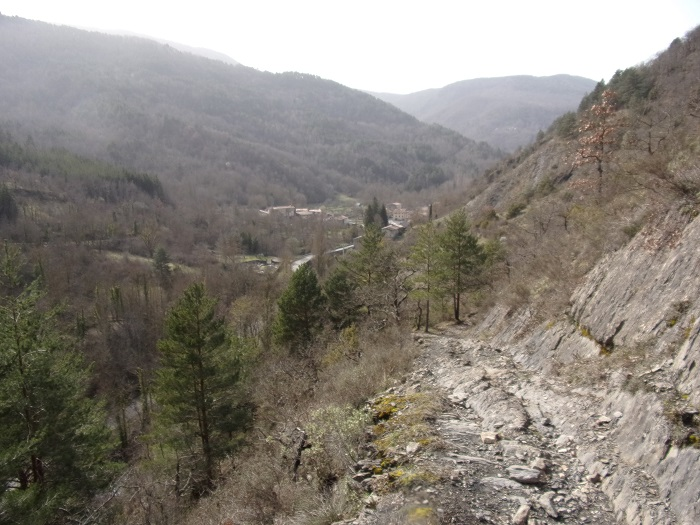
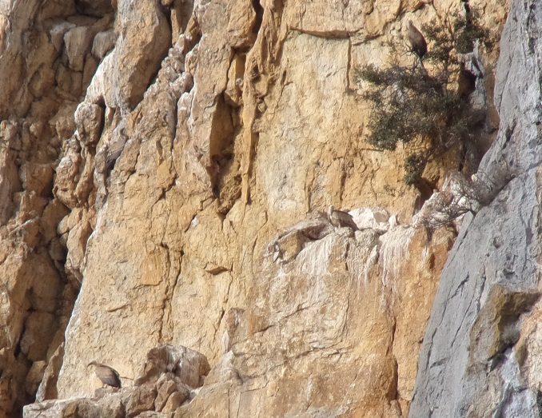
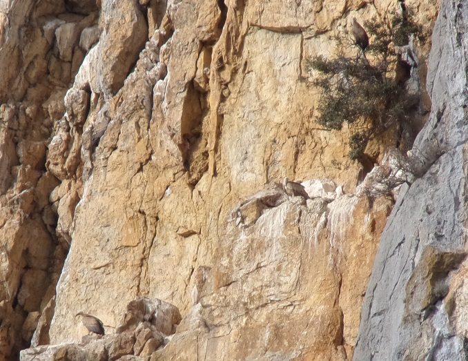
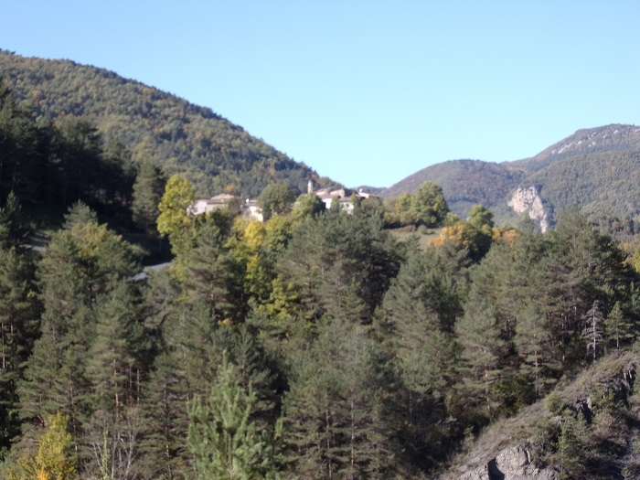
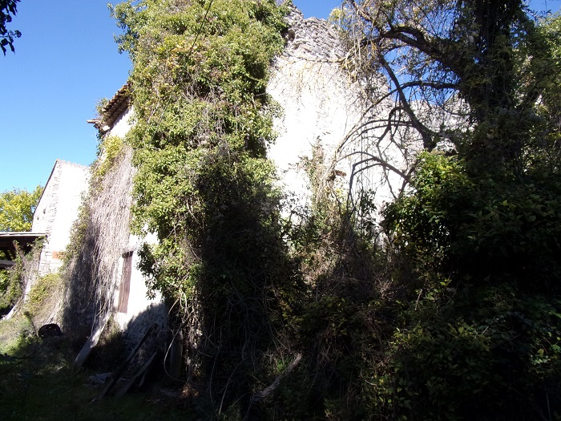

(Voir aussi le chemin de Marsa à Axat)
Les anciennes paroisses dépendants de l'abbaye de St Martin, en proximité du Rébenty, de Courondes et de Boulude étaient pratiquement sur l'actuel sentier Cathare, dans sa variante sud. On aurait pu les apercevoir depuis cette section du sentier entre Marsa et Quirbajou, bien qu'elles aient été sur l'autre rive du Rébenty... La section Cailla - Marsa passe plus près de ces anciennes paroisses mais n'offre qu'une balade en forêt au milieu des troupeaux et peu de particularités photogéniques.
Le départ de cette portion du chemin se fait depuis le village de Marsa
Comme j'y ai laissé mon véhicule j'en ferai une description plus détaillée en fin d'article pour le retour...
Le sentier commence à la sortie du village en direction de Saint-Martin-Lys, juste avant le pont de la départementale qui traverse le Rébenty
Cette première partie du chemin est la plus pentue de tout le parcours et reste très dégagée, permettant d'apercevoir longtemps le village.

Le passage des ânes de randonnées sur cette première portion laisse quelques traces, mais rapidement les chemins bifurquent laissant derrière nous ce léger désagrément.
De nombreuses falaises jalonnent le parcours, en particulier celle des vautours
 

3 Vautours perchés sur cette image, je vous laisse les chercher... Gros plan réalisé par Paul à suivre ?
De nombreux ruisseaux cascadent depuis les hauteurs environnantes, imposants quelques détours ou pont
D'autres points de vue, faciles d'accès permettent un aperçu de la vallée du Rébenty de Marsa à Cailla, avec le Pech de Nadieu dans la pente du quel était niché Boulude
Vue vers Marsa

Vue vers Cailla, au flan de cette rive opposée du Rébenty, se trouvait Courondes
Au delà du Rébenty et du Pech de Nadieu, vers Axat
Nous passons ici par la "Coumo de Sant Paire" (La combe de Saint Pierre), terre de légendes.
C'est par ici qu'aurait transité la dépouille de l'apôtre Saint Pierre depuis la Palestine (Via Pedro de Roda en Espage) pour être transportée au Vatican (où elle ne serait jamais arrivée...). Voir ici l'excellente nouvelle de Jean Lautier "De Quirbajou à Rocquelaure" ou "Les Grandes Heures Des Pyrenees - De Perpignan À Bayonne" de Jean-François Baqué
L'arrivée au roc de la Bastounade
le roc de la Bastounade avec ses multiples nuances de couleur
l'emprunte horizontale du bâton de Saint Martin au Roc de la Bastounade
De l'eau sourde du Roc de la Bastounade créant ces traces grises humides le long de la paroi
le Roc de la Bastounade vu en venant de Quirbajou
L'emprunte de "bâton", parfaitement horizontale, a fait l'objet de nombreuses légendes comme celle racontée à la page sur l'abbaye de Saint Martin de Lez décrivant le combat entre le diable et St Martin (de Tours), finissant par la victoire de ce dernier grâce à son lancé de bâton depuis le Pech de Nadieu contre la forteresse de son adversaire (Alain Peyrard).
Une histoire un peu différente se raconte à Quirbajou...
"Une jeune femme de Quirbajou mariée au Clat était battue par son mari, possédé du démon. Elle s’est enfuie pour rejoindre Quirbajou, son mari l’a poursuivie et rattrapée au Roc de la Bastounade. Mais quand il a voulu la frapper à nouveau, Saint Loup, patron de Quirbajou, lui a arraché le bâton des mains avec une telle force qu’il s’est incrusté dans le roc" (Jean Lautier)
(Remarque : Les églises de Quirbajou et de Marsa sont, toutes les 2, consacrées à Saint Loup de Sens. Mais les habitants de Marsa ont, eux, gardé le souvenir des exactions exorbitantes de leur "méchant" seigneur à l'encontre des habitants de Boulude et de leurs protecteurs, les moines de Saint Martin, même s'ils ont su magnifier cette dispute).
Depuis le haut du Roc de la Bastounade on peut apercevoir le promontoire où se dressait le château de ce Guidon de Marsa
Vue depuis le Roc de la Bastounade sur le "Roc d'al Casteil" où des restes de construction sont encore visibles
A droite, le Pech de Nadieu où se trouvait Boulude
Un des arbres biscornus du Roc de la Bastounade
A peine un peu plus haut que le Roc Nous pouvons voir la "nouvelle" croix de la Bastounade. L'ancienne ayant été dérobée en 1996...
La Croix la Bastounade, son support et le point de vue depuis ce lieu sur le Pech de Nadieu et Cailla (rive droite du Rébenty)
A une époque, il n'y avait pas (plus ?) de cimetière à Quirbajou. Les corps des morts de Quirbajou étaient descendus par ce chemin à Marsa pour y être enterrés. A cet emplacement étaient déposés ces corps, pour attendre le curé de Marsa et aller en procession pour procéder à l'ensevelissement dans une terre consacrée.
Après être passé devant la station d'épuration (quasiment la même que celle de St Martin avec des roseaux), Nous arrivons "enfin" à Quirbajou (moins d'une heure en marchant bien, mais nous avons flâné, grimpé, discuté, râlé...)

Quirbajou, Premières maisons, Panneau signalétique, église Saint Loup
Retour sur Marsa, les routes brillantes au soleil du soir

Eglise St Loup, classée monument historique
Pour plus de détail sur l'histoire de cet édifice voir le remarquable site consacré à Marsa (autre page sur ce même site consacré à l'église et le pdf du dossier du projet de restauration de l'édifice
Le sentier en partant de Marsa rentre très rapidement dans la forêt.
Jusqu'à Cailla, le chemin est facile avec peu de dénivelé, il y a peu d'occasions de faire une photo de paysage.
Des balades à dos d'ane pour les enfants sont proposées depuis Marsa, aussi nous pouvons fréquemment croiser ces escusionnistes.
Plusieurs clotures ferment le chemin pour empécher les troupeaux de s'enfuir, aussi pour pouvoir les passer il faut parfois faire preuve d'un peu d'imagination pour trouver le mécanisme qui permet de d'ouvrir la porte et passer cet obstacle. Quelques panneaux explicatifs raconte l'histoire de ces élevages
Bientôt nous arrivons sur la commune de Cailla. Les photos du village ont été regroupées à la page sur les gorges du Rébenty
Après avoir suivi la route déscendante vers le Rébenty, à l'arrêt de bus, nous prenons à droite la direction du hameau de Laprade
Vue de Cailla depuis le chemin de Laprade
Chemin de Laprade
Les ruines du hameau de Laprade
C'est dans ce hameau que vivait la famille Rouget qui au début du XIXe siècle été propriétaire du moulin farinier de l'embouchure du Rébenty - objet du conflit de territoire entre les communes de Saint Martin et Cailla lors de la mise en place du cadastre Napoléonnien (1829 à 1833 chez nous)
Le plateau de Laprade et ses paturages
Piquet siganétique du sentier Cathare
Le sentier du train (touristique) qui emprunte une partie du sentier cathare
ici la suite du circuit se séparant du sentier Cathare pour retourner vers Axat
Le plateau de Laprade et ses paturages suite
Arrivée en vue d'Axat, vue vers l'église
Vue vers les gorges de St Georges

Vue du viaduc de chemin de fer